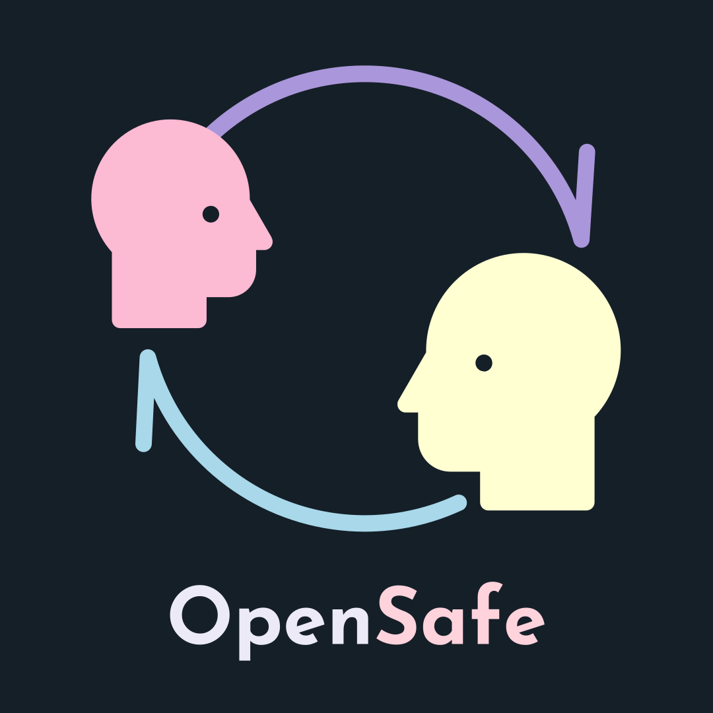

Buscando a una persona . . .

Bienvenid@
Buscando a una persona . . .
9
:
59
¿Ya tienes una cuenta?
¿No tienes una cuenta?
OpenSafe es una plataforma creada con la idea de conectar a personas que desean ser escuchadas y personas dispuestas a escucharlas, todo de una manera anonima, segura y rapida.
Libera tu mente, cuentale a alguien esos sentimientos que quieres sacar, sin riesgos, sin penas, sin repercusiones. Practica esa conversacion incomoda que quieres con alguien. Expresa los sentimientos que tienes por alguien como si fuera esa persona.
Las conversaciones duran un maximo de 10 minutos, aunque se pueden terminar antes, y solo puedes tener una al mismo tiempo. Puedes tener las conversaciones que quieras, y todas se eliminan despues de 24 horas para proteger tu privacidad.
Toda emoción es fundamental para nuestra seguridad y bienestar, todas están bien y las necesitamos. Pero estamos acostumbrados a considerar como negativas algunas emociones, no solo porque perturban nuestra quietud, sino también porque la sociedad les ha atribuido una valoración moral que las marca como reprobables.
Reprimir los sentimientos que hacen daño no significa hacerlos desaparecer; de hecho, generalmente se vuelven más fuertes y más grandes, debido a toda la presión que se necesita para mantenerlos ocultos. No prestar atención a las emociones más difíciles o tratar de distraerse para no sentirlas, no las hace irse.
Sus sentimientos tienen más poder en su salud del que usted imagina. Como no es sano quedarse con las emociones, el cuerpo se inventa una manera de hacerlas notar, y entonces se enferma. Todos los sentimientos que escondemos o reprimimos, por las razones que sean, generan una reacción en nuestro organismo.
En otras palabras, sentimientos y emociones reprimidas, retenidas, no procesadas, pueden expresarse a veces, indirectamente, a través del cuerpo en forma de malestar y dolor físico. La ira forzada, el dolor retenido, el miedo retenido, la alegría no expresada, los sentimientos no mostrados, a menudo pueden causar malestar físico hasta crear verdaderas modificaciones bioquímicas dentro del organismo.
Se parte del cambio y expresa lo que sientes o escucha a alguién que lo necesita, de una forma anónima y segura.
